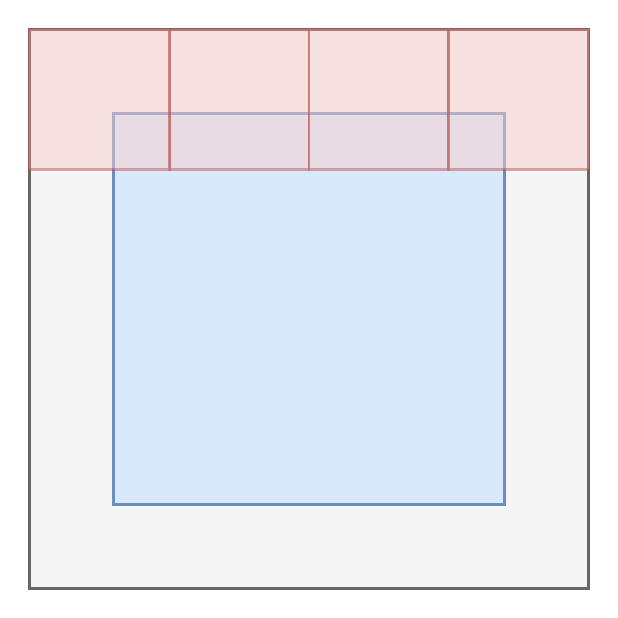

03: Swin Transformer: Hierarchical Vision Transformer using Shifted Windows(Swin Transformer)
在阅读Swin Transformer之前，我们回顾一下Vision Transformer是什么。 ViT 在处理图像时，会将整张图像分割成固定大小的patch，并进行global self-attention的计算，从而捕捉图像中的全局信息。然而，这种方法存在两个核心问题：
计算复杂度高 ：ViT的计算复杂度为 \(\mathcal{O}(( \frac{HW}{P^2})^2)\)，其中\(H\)和\(W\)分别是图像的高度和宽度，而\(P\)是patch的大小。缺乏局部特征建模 ：ViT在进行全局自注意力计算时，可能会忽略图像中的局部特征，不像 CNN，ViT 没有金字塔结构，难以处理密集预测任务（如目标检测、语义分割等）；
为了解决这些问题，Swin Transformer (Liu et al. 2021) 提出了一种新的架构，它通过引入层次化的特征表示和移动窗口机制，来有效地捕捉图像中的局部和全局信息。Swin Transformer 的主要贡献是：
层次化结构（Hierarchical Architecture）: 使用 patch merging 操作逐步减少 token 数量，构建与 CNN 类似的金字塔结构，便于密集任务
局部窗口注意力（Window-based Multi-head Self Attention, W-MSA）: 在固定大小的非重叠窗口内进行自注意力操作，将复杂度从 \(O(( \frac{HW}{P^2})^2)\) 降到 \(O(M^2 \cdot \frac{HW}{M^2}) = O(HW \cdot M^2)\)，其中 \(M\) 是窗口大小.
移动窗口注意力（Shifted Window MSA, SW-MSA）: 通过在相邻层之间移动窗口位置，增强了模型的局部和全局信息捕捉能力。
Swin Transformer 通过引入局部滑动窗口自注意力和分层结构，使 Transformer 成为适用于图像分类、目标检测和语义分割等多任务的通用视觉主干网络。并且减少了计算复杂度，提升了局部特征建模能力。
接下来，我们来详细介绍 Swin Transformer 的架构和关键技术。
1 Swin Transformer 架构
如图 Figure 1 所示，Swin Transformer 的架构由以下几个主要部分组成：
- Patch Partition: 将输入图像分割成固定大小的patch，类似于 ViT。
- Patch Merging （图中
红色 部分）: 在每个阶段通过合并相邻的patch, 逐步减少token数量，构建层次化的特征表示。通过将相邻的patch进行拼接和线性变换，减少特征图的分辨率，同时增加通道数（图中蓝色 部分）。 - Window-based Multi-head Self Attention (W-MSA) （图中
橙色 部分）: 在固定大小的非重叠窗口内进行自注意力操作，将复杂度从 \(O(( \frac{HW}{P^2})^2)\) 降到 \(O(M^2 \cdot \frac{HW}{M^2}) = O(HW \cdot M^2)\)，其中 \(M\) 是窗口大小. - Shifted Window Multi-head Self Attention (SW-MSA) （图中
橙色 部分）: 通过在相邻层之间移动窗口位置，增强了模型的局部和全局信息捕捉能力。
1.1 Patch Partition
假设我们有一个输入图像 \(X\)，其大小为 \(H \times W \times 3\)，其中 \(H\) 是高度，\(W\) 是宽度，\(3\) 是通道数。我们将图像分割成大小为 \(P \times P\) 的patches, 之后将这些raw pixel concentration 在一起，就得到了一个 token。 假设\(P=4\)，每个token的大小为 \(4 \times 4 \times 3 = 48\), 总共有 \(\frac{H}{4} \times \frac{W}{4}\) 个token。
1.2 Linear Embedding
在将图像分割成patches后，我们需要将每个patch转换为一个向量表示。这个过程称为线性嵌入（Linear Embedding）。具体来说，我们将每个patch展平为一个向量，并通过一个线性变换（通常是一个全连接层）将其映射到一个更高维的空间中。这个就是在 Stage 1 Figure 1 中的
1.3 Patch Merging
在每个阶段，Swin Transformer 通过合并相邻的patch来逐步减少token数量，构建层次化的特征表示。具体来说，在每个阶段，我们将相邻的patch进行拼接和线性变换，减少特征图的分辨率，同时增加通道数。这个过程称为 Patch Merging。假设在 Stage 1 中，我们有一个大小为 \(H \times W \times C\) 的特征图，其中 \(C\) 是通道数。通过 Patch Merging，我们将特征图的大小减少为 \(\frac{H}{2} \times \frac{W}{2} \times 2C\)，其中 \(2C\) 是合并后的通道数。
To produce a hierarchical representation, the number of tokens is reduced by patch merging layers as the network gets deeper. The first patch merging layer concatenates the features of each group of 2 × 2 neighboring patches, and applies a linear layer on the 4C-dimensional concatenated features. This reduces the number of tokens by a multiple of 2 × 2 = 4 (2× downsampling of resolution), and the output dimension is set to 2C.
总的来说，Patch Merging 就是 Patch Partition + Linear Embedding 的组合。它通过将相邻的patch进行拼接和线性变换，减少特征图的分辨率，同时增加通道数，从而构建层次化的特征表示。
1.4 Window-based Multi-head Self Attention (W-MSA)
接下来，就到了Swin-Transformer的核心部分：窗口自注意力（Window-based Multi-head Self Attention, W-MSA）。在这个阶段，我们将特征图划分为固定大小的非重叠窗口，并在每个窗口内进行自注意力计算。具体来说，假设我们有一个大小为 \(H \times W \times C\) 的特征图，我们将其划分为大小为 \(M \times M\) 的窗口，其中 \(M\) 是窗口大小。然后，在每个窗口内，我们计算自注意力。
如图 Figure 2 所示，W-MSA 的Attention计算方式与ViT类似，但它只在每个窗口内进行计算，而不是在整个图像上进行全局计算。这种方法大大减少了计算复杂度，从 \(O(( \frac{HW}{P^2})^2)\) 降到 \(O(M^2 \cdot \frac{HW}{M^2}) = O(HW \cdot M^2)\)，其中 \(M\) 是窗口大小。
我们可以看到，不同窗口之间的Attention是独立的，因此我们可以并行计算每个窗口的Attention，这样可以大大提高计算效率。
1.5 Shifted Window Multi-head Self Attention (SW-MSA)
W-MSA虽然在每个窗口内进行了自注意力计算，但它仍然存在一个问题：相邻窗口之间的信息无法直接传递。为了解决这个问题，Swin Transformer 引入了移动窗口机制（Shifted Window Multi-head Self Attention, SW-MSA）。具体来说，在每个阶段，Swin Transformer 会将窗口的位置移动一个固定的步幅，然后再进行自注意力计算。这样，相邻窗口之间就可以通过重叠区域进行信息传递，从而增强了模型的局部和全局信息捕捉能力。
但是要如何实现这个Shifted Attention呢？ 其中一种方法是，将特征图进行padding，然后将窗口划分为大小为 \(M \times M\) 的非重叠窗口。然后，在每个窗口内进行自注意力计算。
A naive solution is to pad the smaller windows to a size of M × M and mask out the padded values when computing attention.

这种方法虽然可以实现移动窗口机制，但会增加计算复杂度。Swin Transformer 采用了一种更高效的方式，通过 cyclic shift 来实现窗口的移动。这种可以在不增加窗口数量的情况下，实现窗口的移动，从而减少计算复杂度。不过需要注意的是，这种方式会将一些窗口的消息混淆，因此需要在计算自注意力时进行mask操作，以确保每个窗口只关注自己的区域。具体的实现方式可以参考接下来的 PyTorch 实现部分。
1.6 Position Embedding
Transformer 模型通常需要位置编码（Position Embedding）来捕捉输入序列中元素的位置信息。Transformer是用来 sin cos 函数来生成位置编码的。使用 learned position embedding 的方式来生成位置编码。Swin Transformer使用了第三种方式， relative position embedding。它通过计算相对位置来生成位置编码，这样可以更好地捕捉输入序列中元素之间的相对关系。具体的
\[ \text{Attention}(Q, K, V) = \mathrm{SoftMax}\left(\frac{QK^\top}{\sqrt{d}} + B\right)V \]
其中B是相对位置编码矩阵。这个矩阵的大小为 \(M^2 \times M^2\)，其中 \(M\) 是窗口大小。对于每个窗口的元素，他们的相对位置是 \([−M + 1, M − 1]\)。 因此我们可以将一个较小尺寸的偏置矩阵 \(\hat{B} \in \mathbb{R}^{(2M - 1) \times (2M - 1)}\) 参数化，并且矩阵 \(B\) 中的值是从 \(\hat{B}\) 中取出的。
1.7 Others
Swin Transformer 还引入了一些其他的技术来提高模型的性能和效率，例如：
- Layer Normalization (Pre-Norm): 在每个阶段的输入和输出之间使用 Layer Normalization 来稳定训练过程。
- Dropout: 在自注意力计算和全连接层中使用 Dropout 来防止过拟合。
- Residual Connection: 在每个阶段的输入和输出之间使用残差连接来加速收敛。
- MLP: 在每个阶段的输出后使用多层感知机（MLP）来进一步处理特征。
- Activation Function: 使用 GELU 激活函数来提高模型的非线性表达能力。
在这里就不过多赘述了，感兴趣的同学可以参考原论文 (Liu et al. 2021)， 或者我的前两篇文章：
2 PyTorch Implementation
3 Key Concepts
| Concept | Explain |
|---|---|
| Swin Transformer | 一种层次化的视觉 Transformer，通过局部窗口注意力与窗口平移机制，实现线性计算复杂度，适用于图像分类、检测、分割等任务。 |
| Window-based Attention（窗口注意力） | 只在固定大小的非重叠局部窗口内计算自注意力，显著减少计算量。 |
| Shifted Window（窗口平移） | 将窗口划分向右下平移一半窗口大小，使不同窗口之间的信息得以交互；需要使用 attention mask 来处理边界问题。 |
| Patch Merging（补丁合并） | 将相邻的 patch 合并以降低分辨率、增加通道数，构建金字塔式层级结构。 |
| Relative Position Bias（相对位置偏置） | 可学习的偏置项，基于 patch 间相对位置添加到 attention 权重中，增强空间感知能力。 |
| Hierarchical Representation（层次化表征） | 模仿 CNN 结构，通过多层 patch merging 构建从细节到全局的多尺度特征。 |
| Linear Complexity（线性复杂度） | 由于注意力局限于局部窗口，总体计算复杂度随输入图像大小呈线性增长。 |
| Dense Prediction（密集预测） | 如语义分割、目标检测等任务，模型需对图像中每个像素或区域输出结果。 |
| Attention Mask（注意力掩码） | 在平移窗口后用于限制不合理 token 间注意力计算的掩码矩阵。 |